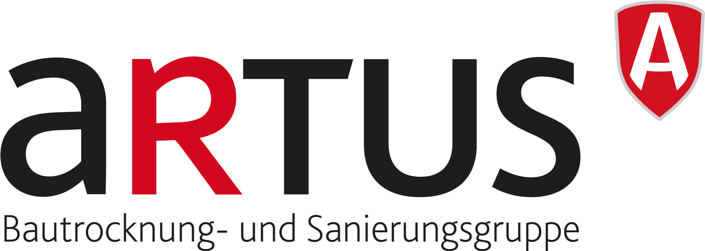

Im Einzelcoaching
Executive Coaching
Für Gründer und Unternehmer, die Unternehmen mit 10 bis 500 Mio. Euro Jahresumsatz führen. Wir arbeiten an den Entscheidungen, Gesprächen und Mustern, die deine Führung prägen.
Mehr zum Executive Coaching
Executive Coaching & Team Facilitation
Klar entscheiden. Offen sprechen. Verantwortung im Team stärken.
Für Gründer, Unternehmer und Führungsteams.
Kennenlerngespräch anfragenEin persönliches Gespräch. 45 Minuten.
Im Coaching: Unternehmer und Führungskräfte von

Im Einzelcoaching
Für Gründer und Unternehmer, die Unternehmen mit 10 bis 500 Mio. Euro Jahresumsatz führen. Wir arbeiten an den Entscheidungen, Gesprächen und Mustern, die deine Führung prägen.
Mehr zum Executive CoachingGemeinsam als Team
Für Führungsteams vor wichtigen Entscheidungen oder mit Reibung in der Zusammenarbeit. Offsite-Moderation und Teamentwicklung, abgestimmt auf eure Situation.
Mehr zu Teams & OffsitesDein nächstes Kapitel
Deine Fähigkeit, Dinge zu durchdenken, anzupacken und Verantwortung zu übernehmen, hat dich weit gebracht. Und doch gibt es Punkte, an denen noch mehr davon wenig verändert.
Genau dort beginnt unsere Arbeit.
Noch eine Analyse. Noch keine Entscheidung.
Kläre widersprüchliche Erwartungen, erkenne, was zählt, und triff eine Entscheidung, mit der du handeln kannst.
Das Gespräch, das du schon lange führen willst.
Sprich die Spannung mit deinem Mitgründer, Team oder Investoren an. Sag, was dir wichtig ist, und bleib offen.
Ein starkes Team. Und trotzdem hängt es an dir.
Mach Erwartungen klar und lass Verantwortung bei anderen. Erkenne, wann dein Einspringen Eigenverantwortung erschwert.
Der nächste Meilenstein. Und dann der nächste.
Bleib ambitioniert und schaffe Raum für Zufriedenheit, Verbundenheit und Freude auf deinem Weg.
Ein anderer Weg nach vorn
Wir arbeiten an konkreten Entscheidungen und Gesprächen. Dabei erkunden wir, wo vertraute Denk- und Handlungsmuster deine Möglichkeiten begrenzen.
Eine offene Entscheidung. Jemand im Team, für den du immer wieder einspringst. Bring mit, was dir gerade wichtig ist.
Wir erkunden Annahmen, Erwartungen und Reaktionen. Gefühle und körperliche Anspannung zeigen oft, was im Nachdenken allein verborgen bleibt.
Eine klare Bitte formulieren. Aussprechen, was du sonst zurückhältst. Probier es im Alltag aus. Beim nächsten Mal schauen wir, was passiert ist.
Über mich
Executive Coach, Gründer und Vater von drei Kindern.
Ich kenne die Verantwortung, ein Unternehmen aufzubauen. Mein eigenes Coaching und das Vatersein haben mir auch gezeigt, wie viel sich verändert, wenn klares Denken und ein ehrlicher Zugang zu meinen Gefühlen zusammenkommen. Beides prägt meine Arbeit mit dir.
Meine Geschichte
Etwas aufzubauen und mich selbst zu verstehen, beschäftigt mich, seit ich denken kann. Beides habe ich lange mit viel Neugier, Disziplin und Nachdenken verfolgt.
Meine ersten sechs Lebensjahre habe ich in einer kleinen Wohnung über der Wäscherei verbracht, die mein Urgroßvater gegründet hatte. Unternehmertum gehörte zum Familienleben: die Entscheidungen, die Verantwortung, die Höhen und Tiefen. Als Teenager brachte ich mir das Programmieren bei und baute mit einem Freund ein eigenes soziales Netzwerk, um Partys zu organisieren und Fotos zu teilen. Es hat mir einfach Freude gemacht, etwas zu bauen, das andere benutzen konnten.
Beim Studium konnte ich mich nicht zwischen Psychologie und Unternehmertum entscheiden. Also studierte ich beides. Später schloss ich meinen Management-Master an der HHL als Jahrgangsbester ab und studierte auch im MBA-Programm der Chicago Booth. Ich lernte, komplexe Probleme zu durchdringen, strategisch zu denken und klar zu kommunizieren.
Meine erste Gründung nach dem Studium war eine eigene Ausbildung. Ich las alles, was ich über Strategie, Produktentwicklung und Unternehmensaufbau finden konnte, und probierte es direkt mit echten Kunden aus. Das Unternehmen ließ sich nicht skalieren, und irgendwann hörte ich auf. Für das, was ich dabei gelernt habe, würde ich es jederzeit wieder tun.
Später begann ich bei Christoph, dem Gründer der kartenmacherei, heute celebrate company, neue Geschäftsmodelle aufzubauen. Von seiner strukturierten, strategischen Herangehensweise, geprägt durch seine Jahre bei Bain & Company, habe ich viel gelernt. Wir sind bis heute befreundet.
Ich gründete celebrate apps und führte das Unternehmen über fünf Jahre als CEO. Wir entwickelten eine Foto-Sharing-App für Hochzeiten und Familien. Gemeinsam mit unserem Team erreichten wir viele Millionen Nutzer. Anschließend war ich als Chief of Staff an der Führung und Restrukturierung der gesamten Gruppe beteiligt, mit rund 650 Mitarbeitenden und über 100 Millionen Euro Umsatz. Ich kenne die Freiheit, bei null anzufangen, ebenso wie die Komplexität eines größeren Unternehmens.
Parallel dazu beschäftigte ich mich seit meiner Jugend intensiv mit meinem Innenleben. Mit ungefähr vierzehn begann ich ernsthaft zu meditieren, oft eineinhalb Stunden am Tag. Ich las Psychologiebücher, erkundete verschiedene meditative Ansätze und probierte immer wieder selbst aus, was ich las. Später besuchte ich zwei zehntägige Vipassana-Schweigeretreats und praktizierte über längere Zeit morgens und abends jeweils eine Stunde.
Ich wusste, wie ich tiefen inneren Frieden finden konnte. Lange dachte ich, ich hätte einfach nicht besonders viele Gefühle. Auf Retreats kam dann Wut hoch, von der ich vorher nichts gewusst hatte. Es überraschte mich, wie viel ich über mich verstehen konnte und wie wenig ich dabei mit dem in Kontakt war, was ich fühlte.
Als ich zum ersten Mal Vater wurde, führte ich gleichzeitig ein Unternehmen und baute ein Haus. In dieser Zeit arbeitete ich mit der Executive Coach Mina Lee. Das veränderte mich so sehr, dass ich selbst lernen wollte, was diese Arbeit möglich machte. Ich hatte nicht vor, Coach zu werden. Ich wollte verstehen und können, was mir selbst so viel gegeben hatte.
Über Mina kam ich zu Joe Hudsons Arbeit. Ich begann, Kurse bei Art of Accomplishment zu besuchen, und stieg später ins Coaching-Training ein. Seitdem lerne ich kontinuierlich bei Joe und Tara und vertiefe die Arbeit immer weiter. Dazu kamen ein Training in Internal Family Systems bei Guthrie Sayen und die Ausbildung zum Realization Process Teacher bei Judith Blackstone, bei der ich mich weiterhin fortbilde.
Meine Kinder brachten dieses Lernen mitten in den Alltag. Meine Frau Julia und ich leben Hand in Hand Parenting. Mit der Wut, den Ängsten und den Tränen unserer Kinder zu sein, führte mich immer wieder zu meinen eigenen Gefühlen. Ich wollte ihnen nah sein, auch wenn ich nicht alles besser machen konnte.
Um mit ihren Gefühlen sein zu können, musste ich lernen, mit meinen eigenen zu sein.
Das geschah langsam, über Jahre des Übens. Trauer wurde zugänglicher. Liebe auch. Meine Kinder haben mein Herz auf eine Weise geöffnet, die ich mir niemals hätte erdenken können. Und ich lerne weiter.
Ich habe erlebt, wie viel mehr möglich wird, wenn ich klar denken und zugleich mit meinen Gefühlen in Kontakt bleiben kann. Ich spüre deutlicher, was ich wirklich will. Ich kann aufmerksamer zuhören, mit offenem Herzen klare Grenzen setzen und Konflikte angehen, ohne die Verbindung zu meinem Gegenüber zu verlieren. Das bildet den Kern meiner Coaching-Arbeit.
Heute begleite ich Unternehmer und Führungsteams und bringe dabei Erfahrung aus Startups und größeren Organisationen mit. Ich gestalte außerdem Retreats für Unternehmen und führe ehrenamtlich als Vorstandsvorsitzender eine Montessori-Schule. Mit drei eigenen Kindern liegt mir viel daran, eine Schule mitzugestalten, in der Kinder sich entfalten können.
In unseren Gesprächen beziehen wir diese Arbeit auf dein konkretes Leben: die Entscheidung, um die du immer wieder kreist, die Spannung mit einem Mitgründer, die Verantwortung, die du schwer teilen kannst. Ich verstehe, was unternehmerisch auf dem Spiel steht. Und mich interessiert der Mensch, der diese Verantwortung trägt.
In ihren Worten
Seit wir regelmäßig miteinander sprechen, fühle ich mich ausgeglichener und zufriedener.
Hannes MünzingerFounder & Managing Director, Homenergy
Mit Max habe ich mehr Leichtigkeit und Spaß in meinen Führungsalltag gebracht. Heute löse ich Konflikte, die ich früher vermieden oder gar nicht gesehen habe.
Maria TaugerbeckHead of Marketing, celebrate company
Zusammenarbeit
Für Gründer und Unternehmer, die ihr Unternehmen führen und daran persönlich wachsen wollen. Wir arbeiten sechs oder zwölf Monate zusammen und entscheiden gemeinsam über eine Fortsetzung.
Ein wöchentlicher Rhythmus
Eng dranbleiben an Entscheidungen, Gesprächen und Veränderungen in deiner Führung. Mit Raum für andere Prioritäten.
Alle zwei Wochen
Mehr Zeit zwischen den Gesprächen, um Neues im Alltag auszuprobieren und deine Erfahrungen in den nächsten Termin mitzubringen.
Ich empfehle zwölf Monate, damit wir deine Entwicklung in unterschiedlichen Situationen begleiten können. Den passenden Rhythmus finden wir gemeinsam.
Die Terminzahl gilt für die gesamte Laufzeit.
Persönliche Intensivtage können wir separat vereinbaren.
In den ersten Terminen lernst du unsere Zusammenarbeit kennen. Während der Passungsphase kannst du das Paket beenden. Die genauen Fristen stehen in den FAQ.
Vor dem Ende deines Pakets entscheiden wir gemeinsam, ob und wie es weitergeht. Es gibt keine automatische Verlängerung.
Im 45-minütigen Gespräch klären wir dein Anliegen, das passende Paket und das Honorar.
Ein paar praktische Fragen
Wie du mit Druck, Konflikten und Verantwortung umgehst, prägt deine Führung. An diesen Mustern arbeiten wir anhand echter Entscheidungen und Gespräche. Dabei schauen wir auf deinen eigenen Anteil und erkennen zugleich an, wenn Probleme tatsächlich bei Personen, Rollen oder Strukturen liegen.
Nein. Bring deine Neugier und eine Situation mit, an der du arbeiten möchtest. Du musst keine Coaching-Sprache kennen oder schon geübt darin sein, über Gefühle zu sprechen.
Ja. Ich arbeite auch mit angestellten CEOs und Geschäftsführern. Deine Verantwortung, dein Einfluss und deine Motivation sind wichtiger als ein bestimmter Titel oder eine Umsatzgrenze. Ob es passt, klären wir im Kennenlerngespräch.
Im Kennenlerngespräch besprechen wir, welches Paket zu dir passt. Anschließend erhältst du ein Angebot mit Laufzeit, Leistungsumfang und Gesamthonorar, bevor du dich entscheidest.
Du entscheidest dich zunächst für ein Paket mit sechs oder zwölf Monaten Laufzeit. Ich empfehle zwölf Monate, damit wir deine Entwicklung über unterschiedliche Situationen hinweg begleiten können. Unsere Zusammenarbeit kann darüber hinaus weitergehen. Eine Fortsetzung vereinbaren wir ausdrücklich; es gibt keine automatische Verlängerung.
Zu Beginn eines neuen Coachingpakets gibt es eine Passungsphase. Du kannst das Paket bis zum Ende des Tages deines dritten tatsächlich stattgefundenen Coachingtermins mit sofortiger Wirkung in Textform, zum Beispiel per E-Mail, beenden. Diese Möglichkeit endet spätestens sechs Wochen nach dem vereinbarten Paketbeginn.
Ja. Ich arbeite mit Co-Foundern, Führungstandems und Leadership-Teams. Außerdem begleite ich Gruppen und moderiere Offsites. Für euer Team gestalte ich auf Wunsch einen individuellen Entwicklungsprozess, der sich an euren Anliegen und Zielen orientiert. Format und Umfang stimmen wir gemeinsam ab. Mehr zu Teams & Offsites.
Lass uns sprechen
Was beschäftigt dich? Ich melde mich persönlich für ein 45-minütiges Gespräch. Gemeinsam schauen wir, ob es passt.
Du musst noch nicht alles durchdacht haben.
Vielen Dank für deine Nachricht. Ich melde mich persönlich per E-Mail bei dir, um einen Termin für unser Kennenlerngespräch zu finden.
Max